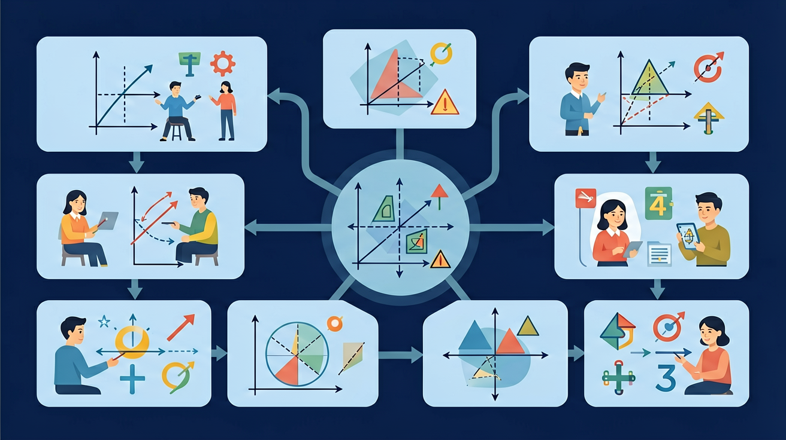

❓ 为什么1小时有60分钟而不是100分钟？
❓ 钟表上的三根针到底谁跑得最快？
❓ 做课间操用了15分钟还是15秒钟？
学完这一课，这些问题你都能自信地回答。
🎯 能说出时、分、秒之间的换算关系
🎯 能判断日常生活事件的时间单位选择
🎯 能计算简单的时间加减法应用题

🌍 And（已知）：你已经掌握了一些基础知识
⚡ But（问题）：遇到更复杂的情况还不够用
💡 Therefore（新知）：学习今天的内容，让能力更完整、更系统
在学习新内容之前，先测测你的基础知识！
Q1：一天有几个小时？
Q2：时钟上分针走一圈是多少分钟？
⏰ 观察时钟指针的运动，感受时间！
大月：31天（1,3,5,7,8,10,12月）
小月：30天（4,6,9,11月）
2月：28天（闰年29天）
时针指向"数字"，分针走格数×1分
8:30到10:00经过
1小时30分
| 从 | 到 | 换算关系 | 例子 |
|---|---|---|---|
| 时 | 分 | ×60 | 3时=180分 |
| 分 | 秒 | ×60 | 5分=300秒 |
| 天 | 时 | ×24 | 2天=48时 |
| 分 | 时 | ÷60 | 180分=3时 |
| 秒 | 分 | ÷60 | 120秒=2分 |
时间单位完全掌握！
完成学习后，用这两道题检验你的掌握程度！
Q1：2小时30分等于多少分钟？
Q2：从8:45到9:15，过了多少分钟？
⚠️ 如果你做错了，看看错在哪里：
如果你计算2小时45分=245分（错！），你用了10进制进行时间计算。时间是60进制：1小时=60分，所以2小时45分=2×60+45=165分钟。
💡 自查方法：把答案代回原题验证，如果算出矛盾就说明中间有错误！
从记忆→理解→应用→分析，逐步深化你的理解！
📌 记忆层（识别）：选出下面哪个是时间单位的正确说法：
计算：从10:40到11:20经过多少分钟？
🔍 理解层（解释）：用自己的话解释概念，并比较区别
解释：为什么时间用60进制而不是10进制？
⚡ 分析层（判断）：判断以下说法是否正确，并说明理由
分析：2小时45分=多少分钟？
💡 背后的原理
🔍 本质：时间的60进制来源于古巴比伦文明（他们使用60进制）。60有很多因数（1,2,3,4,5,6,10,12,15,20,30,60），非常便于整除计算，所以沿用至今。
先独立作答，再点选项查看对错与错因。
小明写作业从8:30到10:00，共用了多长时间？
下面哪个时间单位最小？
足球训练15:30结束，持续了1小时，开始时间是？
1小时=____分钟
答案：60
时间单位换算
小明午饭后休息到14:00，共休息____小时
答案：3
11:00到14:00
关于时间单位哪个正确？
记录三次课间活动时间
✅ 用小数部分×60换算：0.5小时=30分钟
💡 混淆十进制和六十进制转换
✅ 建立参照：系鞋带约15秒，短跑约10秒
💡 缺乏生活经验量化
口诀：时分秒，六十进，时针慢，秒针勤
类比：时间单位像楼梯，秒是台阶分是层，时就像整栋楼
And：学生已会数1-12的数字
But：不清楚钟面上小格与大格的关系
Therefore：理解钟面结构才能准确读时
钟面有12个大格代表小时，每个大格又分5个小格代表分钟。比如：从数字12到1有5个小格，表示5分钟；时针走1大格是1小时，分针走1小格是1分钟。看钟表时要先找时针位置确定几点，再看分针位置数小格算分钟。
🌍 早上7:15上学时，时针指向7和8之间，分针指向3（表示15分钟），合起来就是7时15分。
分针从12走到3，经过多少分钟？
And：知道1小时=60分钟
But：不会用加减法换算具体时间
Therefore：掌握换算才能解决实际问题
时间单位换算是通过加减60进行的。比如：2小时15分钟=60×2+15=135分钟；反过来180分钟=180÷60=3小时。关键记住满60分钟进1小时，不够减时要借1小时变60分钟。例如：计算8时45分+35分，先算45+35=80分钟，80-60=20分钟，进位后变成9时20分。
🌍 动画片从9:30播放到10:50，用60-30=30分钟，再加50分钟，总共看了80分钟。
3小时25分钟 - 1小时40分钟 = ?
And：会读钟表和简单换算
But：遇到跨时段计算容易出错
Therefore：培养解决生活时间问题的能力
计算跨时段时间要分段相加。比如：小明写作业从下午4:15到5:30，先算4:15-5:00是45分钟，再算5:00-5:30是30分钟，总共45+30=75分钟。特别注意跨中午12点的情况：上午9:00到下午2:00要转换成14时-9时=5小时。
🌍 学校春游8:30出发，11:50返回，用11时50分-8时30分=3小时20分钟。
从晚上7:20到次日6:40经过多久？